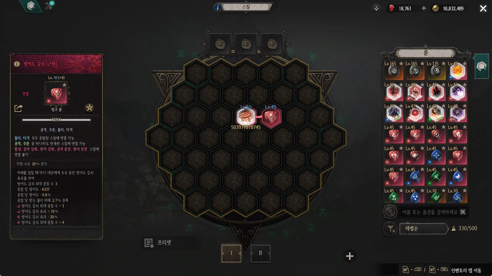
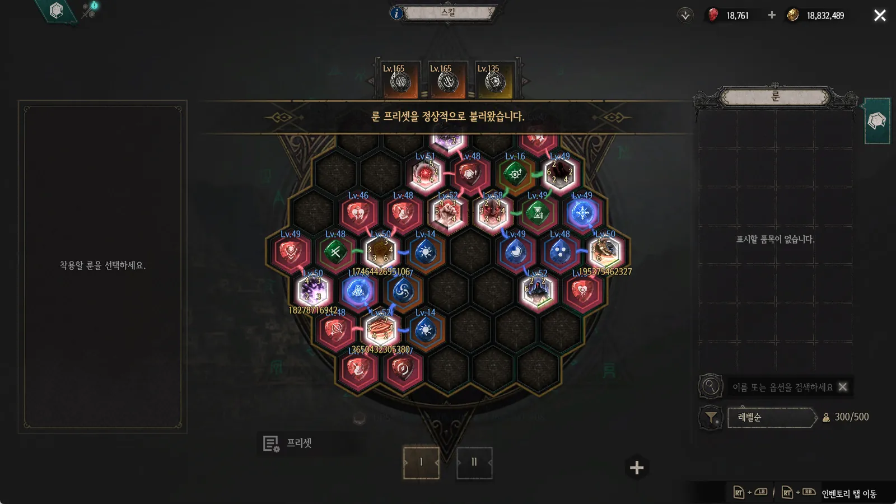
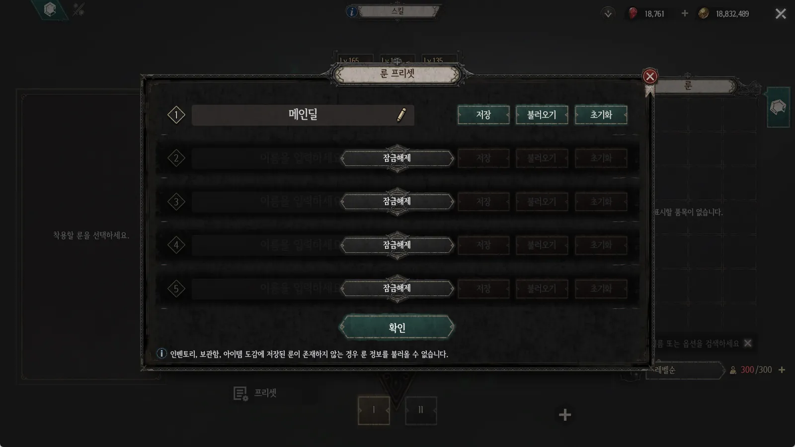
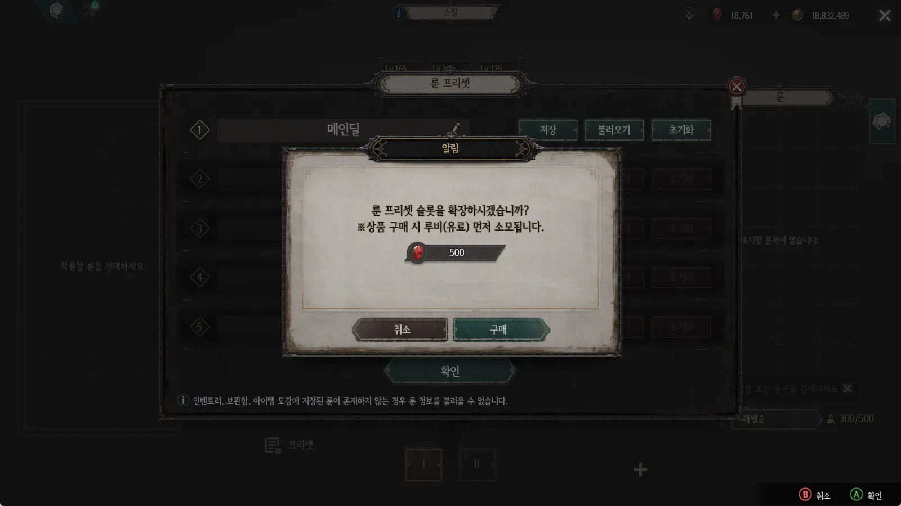

빌드를 바꾸려면, 룬을 전부 다시 놓아야 했다
언디셈버의 빌드는 룬 캐스트(헥사 배치)와 룬 스톤, 스킬·트리거·퀵 슬롯이 얽혀 완성됩니다.
PROBLEM
빌드를 바꾸려면 장착한 룬을 모두 빼고 다시 배치해야 했습니다. 일부만 조정할 때도 시도 중 구성이 틀어지면 원래 상태로 되돌리기 어려웠습니다.
GOAL
빌드 전환과 원복을 한 번의 불러오기로 처리하고, 저장한 구성을 DB에 보관해 다른 PC·기기에서도 이용하도록 합니다.


룬 배치 복원
일반·RM(룬 마스터) 룬 캐스트에 저장한 룬을 찾아, 저장 당시의 슬롯에 다시 장착합니다.
관련 장착 정보도 함께
룬 스톤과 스킬·트리거·퀵 슬롯까지 저장 범위에 포함해 빌드 구성을 한 세트로 묶습니다.
적용 결과 안내
불러오기 결과를 알리고, 일부 룬을 적용하지 못했을 때는 '부분 성공'으로 구분합니다.
구성은 캐릭터 단위, 해금은 계정 단위
무엇을 저장하는지와 누가 이용할 수 있는지를 서로 다른 단위로 나눴습니다.
| 구분 | 관리 단위 | 내용 | 설계 의도 |
|---|---|---|---|
| 저장 대상 | 캐릭터 | 일반·RM 룬캐스트 / 룬 스톤 / 스킬 슬롯 / 트리거·RM 트리거 슬롯 / 퀵 슬롯 | 빌드를 구성하는 장착 영역을 한 세트로 저장 |
| 식별 방식 | 캐릭터 | 프리셋 이름, 개별 룬의 UID와 장착 위치를 DB에 저장 | 같은 종류의 룬도 UID로 각각 식별 → 강화 상태가 다른 동일 룬 구분 |
| 프리셋 슬롯 해금 | 계정 | 기본 1개 제공, 최대 5개. 추가 슬롯당 500 루비 | 시즌이 바뀌어도 구매한 슬롯은 초기화하지 않음 |
| 구매 안내 | - | 구매 전 비용과 유료 루비 우선 소모를 안내 | BM 결제 경험의 투명성 |


설계 포인트
'구성(캐릭터)'과 '이용 권한(계정)'을 분리해, 캐릭터마다 다른 빌드를 저장하면서도 한 번 산 슬롯은 시즌 캐릭터가 바뀌어도 그대로 쓰도록 했습니다.
일부 룬이 없어도, 가능한 구성은 적용한다
저장 당시와 현재 보유 상태는 언제든 달라질 수 있습니다. 하나가 없다고 전체를 막지 않도록 판단 기준을 세웠습니다.
| 현재 상태 | 적용 규칙 | 판단 기준 |
|---|---|---|
| 일부 룬·룬 스톤이 없음 | 해당 슬롯을 건너뛰고 나머지 슬롯 확인 | 일부 누락으로 전체 적용을 막지 않음 |
| 일반·RM 룬 슬롯이 잠김 | 잠긴 슬롯에는 장착하지 않음 | 현재 슬롯 해금 상태를 유지 |
| 슬롯에 같은 룬 지정 | 스킬·트리거·퀵 슬롯의 중복 지정 허용 | 각 장착 영역의 이용 규칙을 반영 |
| 인벤토리 한도 초과 | 불러오기(기존 룬 장착 해제)로 발생한 초과는 허용 | 교체 과정에서 발생하는 예외를 명시 |
① 기존 장착 해제룬 캐스트와 장착 슬롯의 룬·룬 스톤 해제
② 보유 위치 확인현재 모드의 보관함·도감에서 Unique ID 확인 후 인벤토리 이동
③ 저장 위치에 적용룬 캐스트 배치와 나머지 장착 슬롯 복원
개발 중 보완
- 저장 후 버튼 상태 갱신 — 저장 직후 프리셋 버튼이 최신 상태를 반영하도록 처리
- 보유 룬 안내 추가 — 적용하지 못한 룬이 무엇인지 확인할 수 있도록 안내
- 불러오기 쿨타임과 재시도 안내 — 연속 요청으로 인한 서버 부하·상태 꼬임을 막고, 재시도 시점을 데이터로 관리
포트폴리오 원본 슬라이드
PDF 포트폴리오 6~9쪽 전체입니다. 클릭하면 크게 보고 ← → 키로 넘길 수 있습니다.